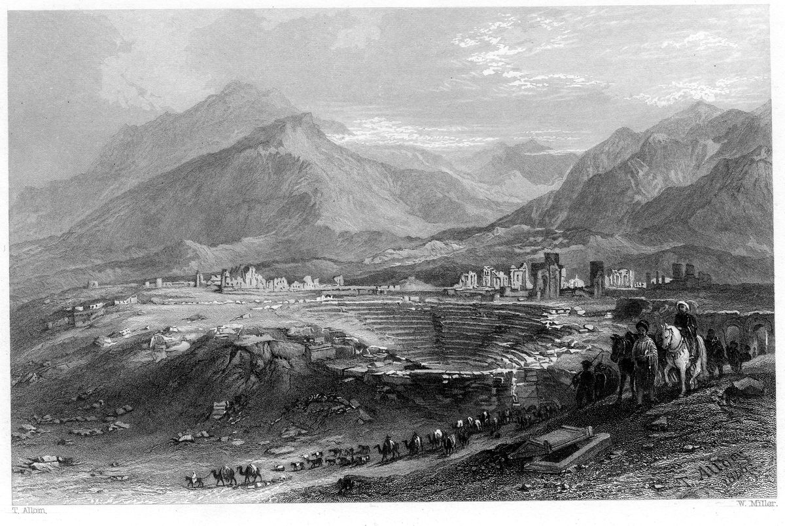

Colosenses 4 — La Traducción Mister

⚠ Laodicea tal como la vio un viajero del siglo XIX, con su teatro y sus murallas en ruinas entre las montañas del valle del Lico. «Saluden a los hermanos de Laodicea … Y cuando esta carta haya sido leída entre ustedes, hagan que se lea también en la congregación de los laodicenses» (versículos 15–16).

Notas del traductor
⚠ «Amos, concedan a sus esclavos lo que es justo e igual». Este versículo cierra las instrucciones a la casa de 3:18–25; la división de capítulos, añadida muchos siglos después, cae en medio de ellas, de modo que la instrucción a los esclavos y la de los amos quedan en páginas distintas en la mayoría de las Biblias. «Amos … un Amo en el cielo» es una sola palabra griega, kyrios, usada de ambos, como en Efesios 6:9, «el Amo de ellos y de ustedes está en los cielos». Isotēs, «igual», está en tres versículos: 2 Corintios 8:13 y 2 Corintios 8:14, «por igualdad … y haya igualdad», y este (diccionario). La mayoría de los lectores lo toma aquí como equidad, trato justo; otros mantienen «igualdad», la condición de hombres que sirven a un mismo Amo. Esta traducción conserva «igual», que puede llevar ambas cosas, y no elige. Sobre cómo se han usado los versículos de la casa, véanse las notas de Colosenses 3:22 y Efesios 6:5. La RV60 dice «haced lo que es justo y recto con vuestros siervos»; la TNM 1987 dice «sigan dando lo que es justo y lo que es equitativo a [sus] esclavos»; la NVI dice «proporcionen a sus esclavos lo que es justo y equitativo».
«Perseveren en la oración, manteniéndose alerta en ella con acción de gracias». Proskartereō es el «perseveren en la oración» de Romanos 12:12 y el «perseveraban … en la oración» de Hechos 1:14 (diccionario). «Manténganse alerta» es la palabra de Jesús en Getsemaní, «Manténganse alerta y oren» (Marcos 14:38). La gratitud vuelve otra vez, después de 3:15–17. La RV60 dice «Perseverad en la oración, velando en ella con acción de gracias»; la TNM 1987 dice «Sean perseverantes en la oración, y permanezcan despiertos en ella con acción de gracias»; la NVI dice «Dedíquense a la oración».
«Para que Dios nos abra una puerta para la palabra … por el cual también estoy encadenado». La puerta abierta es la figura de Pablo en 1 Corintios 16:9, «se me ha abierto una puerta grande y eficaz», y en 2 Corintios 2:12; en Hechos 14:27 Dios «había abierto a las naciones una puerta de fe». Pide una puerta mientras está sentado detrás de otra. «El misterio de Cristo» es el misterio «manifestado» en Colosenses 1:26, y «lo manifieste» en el v. 4 es el mismo verbo. «Estoy encadenado» (dedemai, «he sido atado») y «mis cadenas» en el v. 18 (desmoi) son una sola raíz. La RV60 dice «para que el Señor nos abra puerta para la palabra»; la TNM 1987 dice «una puerta de expresión»; la NVI dice «a fin de que Dios nos abra la puerta para proclamar la palabra».
«Anden en sabiduría para con los de afuera, comprando el tiempo». «Comprando el tiempo» es la expresión de Efesios 5:16 (diccionario); kairos es el momento oportuno más que el tiempo en general. «Los de afuera» son los que no están en la congregación, como en 1 Corintios 5:12, «juzgar a los de afuera». La RV60 dice «Andad sabiamente para con los de afuera, redimiendo el tiempo»; la TNM 1987 dice «comprándose todo el tiempo oportuno que queda»; la NVI dice «aprovechando al máximo cada momento oportuno».
«Que su hablar sea siempre con gracia, sazonado con sal». Artyō, «sazonar», está en tres versículos: Marcos 9:50, «¿con qué la sazonarán?», Lucas 14:34, y este (diccionario). Los lectores toman la sal como el sabor que hace que valga la pena oír lo que se dice, o como lo que impide que se eche a perder, la «palabra podrida» de Efesios 4:29; o ambas cosas. «Gracia» es la palabra del saludo de la carta y de su última línea. La RV60 dice «Sea vuestra palabra siempre con gracia, sazonada con sal»; la TNM 1987 dice «Que su habla siempre sea con gracia, sazonada con sal»; la NVI dice «Que su conversación sea siempre amena y de buen gusto».
«Tíquico, el hermano amado y fiel servidor y consiervo en el Señor». Estos dos versículos y Efesios 6:21 y Efesios 6:22 dicen lo mismo con las mismas palabras: aparte de «y consiervo», que solo tiene Colosenses, veintinueve palabras griegas corren iguales en ambas cartas, y el v. 8 es palabra por palabra Efesios 6:22 (enciclopedia). Los lectores lo explican como dos cartas llevadas en un mismo viaje por un mismo hombre, o como una carta escrita con la otra abierta al lado. «Consiervo» es el título que se da a Epafras en Colosenses 1:7 (diccionario). El texto bizantino dice «para que él conozca sus asuntos», y así la RV60: «para que conozca lo que a vosotros se refiere, y conforte vuestros corazones»; la TNM 1987 dice «de que sepan de las cosas que tienen que ver con nosotros».
«Con Onésimo, el hermano fiel y amado, que es uno de ustedes». Si es el Onésimo de la carta a Filemón, como suele sostenerse, es el esclavo que dejó a su amo en Colosas y ahora es enviado de vuelta como «hermano amado» (Filemón 1:16; enciclopedia). Aquí nada se dice de su condición: es «uno de ustedes», la expresión usada de Epafras en el v. 12, y lleva las noticias con Tíquico. Ignacio de Antioquía, hacia el año 110, nombra a un obispo de Éfeso llamado Onésimo; si es el mismo hombre se discute. La RV60 dice «amado y fiel hermano, que es uno de vosotros»; la TNM 1987 dice «mi fiel y amado hermano, que es de entre ustedes»; la NVI dice «querido y fiel hermano». La TNM suple un pronombre que el griego no tiene.
«Aristarco, mi compañero de prisión». El macedonio de Tesalónica arrebatado en el teatro de Éfeso (Hechos 19:29) y a bordo con Pablo en Hechos 27:2 (enciclopedia). Synaichmalōtos está en tres versículos: Romanos 16:7, de Andrónico y Junias, este, y Filemón 1:23, donde el título va para Epafras y Aristarco aparece entre los «colaboradores» (diccionario). Está formado sobre aichmalōtos, un cautivo tomado en guerra. Los lectores lo toman como hombres que compartieron el encierro de Pablo, quizá por turnos, o como figura de la guerra en que sirvieron juntos. La RV60 dice «Aristarco, mi compañero de prisiones, os saluda»; la NVI dice «Aristarco, mi compañero de cárcel, les manda saludos».
«Marcos, el primo de Bernabé». Anepsios está en un solo versículo del Nuevo Testamento (diccionario). El Antiguo Testamento griego lo usa en Números 36:11 para los maridos de las hijas de Zelofehad, «los hijos de sus tíos», es decir, primos; el griego posterior lo usó también para un sobrino, y así algunas versiones antiguas. Este es el Marcos por el que Pablo y Bernabé se separaron en Hechos 15:39, «se produjo un desacuerdo tan agudo» (enciclopedia); aquí está otra vez con Pablo, y en Filemón 1:24 es «colaborador». Cuándo o cómo los colosenses «recibieron instrucciones» acerca de él no se dice. La RV60 dice «Marcos el sobrino de Bernabé»; la TNM 1987 dice «Marcos el primo de Bernabé»; la RV 1909 dice «Marcos, el sobrino de Bernabé».
«Jesús, llamado Justo … solo estos son colaboradores … un consuelo». «Jesús», la forma griega de Josué, era un nombre judío común (enciclopedia). Ioustos, el nombre latino «Justo», está en tres versículos: Hechos 1:23, el sobrenombre de José Barsabás, Hechos 18:7, Ticio Justo en Corinto, y este. «Los que son de la circuncisión» son los judíos entre los compañeros de Pablo, y la frase suele leerse en el sentido de que Aristarco, Marcos y Justo eran los únicos colaboradores judíos con él. En esa lectura los tres nombrados después, Epafras, Lucas y Demas, eran gentiles, y Lucas es el único escritor del Nuevo Testamento que no era judío; otros piensan que la frase no lo decide. Parēgoria, «consuelo», está en un solo versículo (diccionario); de su familia viene el «paregórico», un medicamento calmante, y tres versículos después un médico envía sus saludos. La RV60 dice «que son los únicos de la circuncisión que me ayudan en el reino de Dios, y han sido para mí un consuelo»; la NVI dice «Estos son los únicos judíos que colaboran conmigo»; la TNM 1987 dice «un socorro fortalecedor».
«Epafras … siempre luchando por ustedes en sus oraciones, para que estén firmes, maduros y plenamente convencidos». El fundador de la congregación (enciclopedia), nombrado en Colosenses 1:7. Su oración usa las palabras del propio Pablo en esta carta: «luchando», como en Colosenses 1:29, «maduros», como en Colosenses 1:28 (diccionario), y «plenamente convencidos», el verbo de Romanos 4:21 y la «plena certidumbre» de Colosenses 2:2. El texto que sigue esta traducción dice «esclavo de Cristo»; Westcott–Hort y Nestle–Aland añaden «Jesús». La RV60 dice «siervo de Cristo, siempre rogando encarecidamente por vosotros en sus oraciones, para que estéis firmes, perfectos y completos en todo lo que Dios quiere»; la TNM 1987 dice «esclavo de Cristo Jesús»; la NVI dice «Este siervo de Cristo Jesús».
«Se toma grandes afanes por ustedes y por los de Laodicea y los de Hierápolis». Ponos está en cuatro versículos: este, dos en Apocalipsis 16 (16:10, 16:11), y Apocalipsis 21:4, «ni habrá ya luto ni clamor ni dolor» (diccionario); el inglés «takes great pains» conserva allí la palabra «dolor». El texto bizantino dice «gran celo», y así la RV 1909: «que tiene gran celo por vosotros»; la TNM 1987 dice «que se empeña mucho a favor de ustedes». Las tres ciudades estaban a unos veinticinco kilómetros unas de otras en el valle del Lico. Laodikeia se nombra en seis versículos, cuatro de ellos en esta carta y dos en Apocalipsis, entre ellos Apocalipsis 3:14 (enciclopedia); Hierápolis, «ciudad santa», está en un solo versículo (enciclopedia).
«Los saluda Lucas, el médico amado, y Demas». Este es el único lugar donde a Lucas se le llama médico (enciclopedia). Iatros está en siete versículos, entre ellos el proverbio «Médico, cúrate a ti mismo» de Lucas 4:23. Desde el siglo II se le tiene por autor del Evangelio de Lucas y de Hechos. W. K. Hobart sostuvo en 1882 que el vocabulario del Evangelio es el de un médico; H. J. Cadbury respondió que la mayoría de esas palabras están también en escritores que no eran médicos, y el argumento ya no se usa mucho. Los lectores todavía señalan una diferencia: donde Marcos dice que la mujer del flujo de sangre «había sufrido mucho a manos de muchos médicos … sino que más bien iba a peor» (Marcos 5:26), Lucas dice solo que «había gastado en médicos todo lo que tenía» (Lucas 8:43). Demas envía saludos aquí y en Filemón 1:24; en 2 Timoteo 4:10 es el que «abandonó» a Pablo (enciclopedia). La RV60 dice «Os saluda Lucas el médico amado, y Demas»; la NVI dice «Los saludan Lucas, el querido médico, y Demas»; la TNM 1987 dice «Lucas el médico amado les envía sus saludos».
⚠ «Ninfa y la congregación que está en casa de ella». Los manuscritos se dividen. El Códice Vaticano dice «la casa de ella», el Códice Sinaítico «la casa de ellos», y el texto bizantino «la casa de él». El nombre en acusativo, Nymphan, puede ser el nombre de mujer Ninfa o un nombre de hombre, Ninfas, y solo el acento los distingue; los manuscritos más antiguos se escriben sin acentos (enciclopedia). Los editores del texto de las Sociedades Bíblicas Unidas imprimen «de ella» y marcan la elección como difícil. Quienes prefieren «de ella» sostienen que un copista tenía más probabilidad de cambiar a una mujer en un hombre que al revés; quienes prefieren «de él» señalan la mayor difusión de esa lectura. Esta página expone ambas y no elige. En español «su casa» oculta la pregunta, y por eso esta traducción escribe «en casa de ella». Las congregaciones se reunían en casas, como en Romanos 16:5, 1 Corintios 16:19 y Filemón 1:2. La RV60 dice «y a Ninfas y a la iglesia que está en su casa»; la TNM 1987 dice «y a Ninfa y a la congregación [que se reúne] en su casa»; la NVI dice «como también a Ninfas y a la iglesia que se reúne en su casa».
⚠ «Y que ustedes también lean la de Laodicea». No se conoce ninguna carta de Pablo a Laodicea, y los lectores han propuesto tres. Puede ser una carta hoy perdida. Puede ser Efesios: los manuscritos más antiguos de Efesios no tienen «en Éfeso» en 1:1, y Tertuliano informa que Marción, en el siglo II, la llamaba la carta «a los laodicenses» (véase la nota de Efesios 1:1). Algunos han propuesto Filemón. Una breve «Carta a los laodicenses» en latín, veinte versículos reunidos sobre todo de Filipenses, aparece por primera vez en el Códice Fuldense, copiado en 546, y estuvo en muchas Biblias latinas durante siglos; en general se tiene por una composición posterior motivada por este versículo. «La de Laodicea» puede significar una carta que llega desde allí, no una escrita a esa ciudad. La RV60 dice «y que la de Laodicea la leáis también vosotros»; la TNM 1987 dice «y para que ustedes también lean la de Laodicea»; la NVI dice «y ustedes lean la carta dirigida a esa iglesia», lo cual decide lo que el griego deja abierto.
«Díganle a Arquipo: “Atiende al servicio que recibiste en el Señor, para que lo cumplas”». Archippos está en dos versículos: este y Filemón 1:2, «Arquipo nuestro compañero de milicia» (enciclopedia). Cuál era su «servicio» no se dice; si las palabras son un ánimo o un recordatorio intencionado se lee de ambos modos. «Cumplir» es plēroō, como en Colosenses 1:25, «a fin de cumplir la palabra de Dios»: una carta que ha hablado de toda la plenitud que habita en Cristo (1:19, 2:9) y de los lectores «llenados» en él (2:10) termina diciendo a un hombre que llene del todo su tarea. La RV60 dice «Mira que cumplas el ministerio que recibiste en el Señor»; la NVI dice «que se ocupe de la tarea que recibió en el Señor y que la lleve a cabo».
«Este saludo lo escribo yo, Pablo, de mi propia mano. Acuérdense de mis cadenas». El mismo griego de 1 Corintios 16:21; compárese Gálatas 6:11, «Miren con qué letras tan grandes les he escrito de mi propia mano», y Filemón 1:19. Las cartas las escribía un escriba, como dice Tercio en Romanos 16:22, y el remitente tomaba la pluma al final. Quienes sostienen que la carta la escribió un seguidor de Pablo leen la línea de otro modo; las lecturas difieren. «Cadenas» es la raíz del v. 3. El texto bizantino añade «Amén», y manuscritos posteriores añaden «Escrita desde Roma a los colosenses por medio de Tíquico y Onésimo», que imprime la Geneva: «Written from Rome to the Colossians, and sent by Tychicus, and Onesimus». La RV60 dice «La salutación de mi propia mano, de Pablo. Acordaos de mis prisiones»; la NVI dice «Yo, Pablo, escribo este saludo de mi puño y letra. Recuerden que estoy preso».
Patrones que vale la pena recordar
Donde esta traducción conserva las palabras exactas: «Amo» para el kyrios de los amos, como en Efesios 6:9; «igual» para la «igualdad» de 2 Corintios 8:14; «perseveren en la oración», como en Romanos 12:12; «manténganse alerta», como en Marcos 14:38; «manifestar», como en 1:26; «comprando el tiempo», como en Efesios 5:16; «sazonar», como en Marcos 9:50; los versículos de Tíquico palabra por palabra como en Efesios 6:21–22; «consiervo», como en 1:7; «compañero de prisión» y «colaboradores», como en Filemón 23–24; «luchando» y «maduros», como en 1:28–29; «plenamente convencidos», como en Romanos 4:21; «congregación» para ekklēsia; «servicio», como en Efesios 4:12; «cumplir», como en 1:25; y «este saludo lo escribo yo, Pablo, de mi propia mano», como en 1 Corintios 16:21.
Ecos pagados. La instrucción a los amos que cierra Colosenses 3:22; la gratitud, después de Colosenses 3:17; el misterio manifestado en Colosenses 1:26; el Tíquico de Efesios 6:21; Epafras, el consiervo de Colosenses 1:7, ahora luchando y orando por los maduros de Colosenses 1:28–29; la plena certidumbre de Colosenses 2:2; Laodicea, por la que Pablo luchaba en Colosenses 2:1; Onésimo de Filemón 1:10; Arquipo de Filemón 1:2; y la plenitud de Colosenses 2:9, que termina en un hombre al que se le dice que cumpla su servicio.
Ecos sembrados. Laodicea, saludada aquí, recibe una carta propia en Apocalipsis 3:14. Demas, que saluda aquí, abandona a Pablo en 2 Timoteo 4:10, y Marcos, un primo con un pasado, es llamado «útil para el ministerio» en 2 Timoteo 4:11, con la palabra que Filemón 1:11 usa de Onésimo.
Esta es la última entrega de Colosenses. La carta siguiente es 1 Tesalonicenses 1, ya en estas páginas.